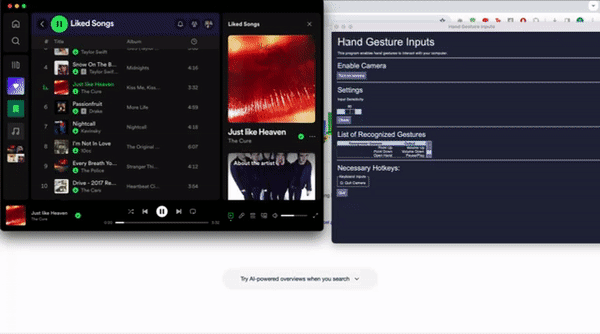
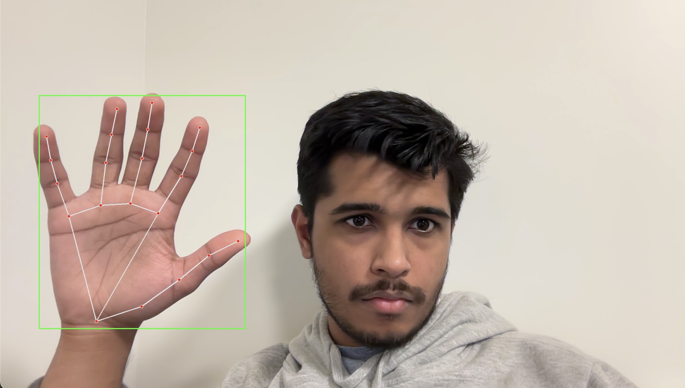
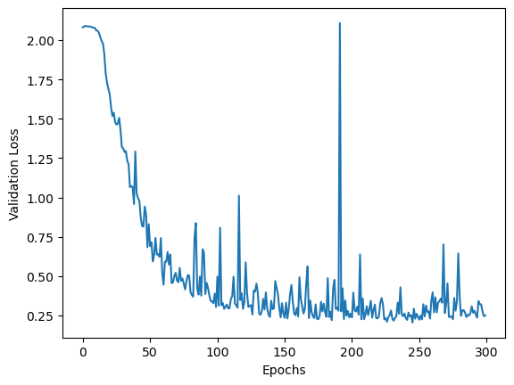
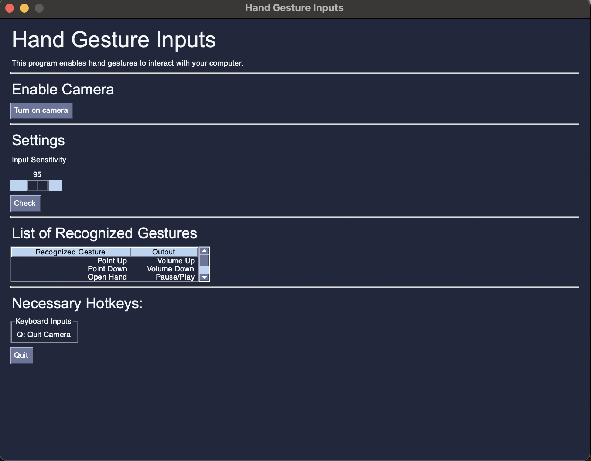

import mediapipe as mp
import cv2
import numpy as np
import torch
import torch.nn as nn
import torch.utils as utils
from datetime import datetime
import matplotlib.pyplot as plt
import warnings
mp_drawing = mp.solutions.drawing_utils
mp_hands = mp.solutions.hands
hands = mp_hands.Hands(min_detection_confidence=0.3, static_image_mode=True, max_num_hands=1)
classes = ("down", "up", "stop", "thumbright", "thumbleft", "right", "left", "background")Project Walkthrough: Hand Gesture Media Player
Overview
In this project walkthrough, we’ll go through how we created a program that reads in gestures from the computer’s webcam and controls your media player for you! This includes functions like changing the volume, skipping tracks, and even scrubbing forwards/backwards on media! We’ll talk about how Google’s MediaPipe works, how we trained the model, how we got the computer to control the user’s media player, and go into the GUI as well. For reference, the link to the github repository is here: https://github.com/ReetinavDas/Hand-Gesture-Media-Player.

OpenCV Introduction
OpenCV (Open Source Computer Vision) is an open-source library of programming functions mainly aimed at real-time computer vision. It provides tools and utilities for computer vision tasks, such as image and video processing. OpenCV is widely used in fields like robotics, machine learning, image and video analysis, and computer vision applications. Here’s a simple example to see how this works:
import cv2
# Read an image from file
image = cv2.imread('path/to/your/image.jpg')
# Display the image
cv2.imshow('Image', image)
cv2.waitKey(0)
cv2.destroyAllWindows()In this code, it is reading in an image in the user’s filepath, and this image can be showed in a new window by using the cv2.imshow('Image', image) function. The next two lines will continuously check if a key is pressed, and if so, it will close the windows currently displaying images.
But what if we want to use this to read input from our computer/laptop webcam? We’d especially want to know this since the focus of the project is detecting hand gestures from the computer webcam. Luckily this isn’t too complicated, and the code below is all we need to get the webcam up and running:
cap = cv2.VideoCapture(0)
while True:
ret, frame = cap.read()
cv2.imshow("frame", frame)
if cv2.waitKey(1) == ord("q"):
break
cap.release()
cv2.destroyAllWindows()The function cap.read() returns the frame (the image itself), and ret tells us whether or not the capture worked properly. Once we store the output in frame we can send that over to the MediaPipe program to convert that image into hand landmarks. Before we go into that we’ll take a closer look into MediaPipe.
MediaPipe Introduction
MediaPipe is a package by Google which simplifies a lot of common machine learning tasks, allowing one to skip the strenous process of training millions of samples. They have many different “solutions” to common challenges, like audio, natural language, etc. One of these solutions are their Hand Landmarks Detection program, which takes in pictures of hands and translates them into numerical coordinates. We will use this package to teach the model how to detect a hand gesture. The main benefit of this is that we do not need to directly train on the images of hands using convolutional neural networks, which typically require a very large amount of data and a lot of time to train. Instead, we just train on the coordinates which is a lot simpler and faster to compute. We can see the landmarks that the program extracts from the hand images below. This simplifies the image down to 21 coordinates of the hand, with 4 points for each finger, and an additional one for the wrist.

Let’s put this all together and see if we can visualize these keypoints in real time! We first import the necessary packages:
import numpy as np
import cv2
import time
import mediapipe as mp
from mediapipe.tasks import python
from mediapipe.tasks.python import visionWe will then create a function that will take use the image read in by OpenCV and annotate it with the keypoints. The function definition is as below:
def draw_landmarks_on_image(rgb_image, detection_result):
hand_landmarks_list = detection_result.hand_landmarks
handedness_list = detection_result.handedness
annotated_image = np.copy(rgb_image)
# Loop through the detected hands to visualize.
for idx in range(len(hand_landmarks_list)):
hand_landmarks = hand_landmarks_list[idx]
handedness = handedness_list[idx]
# Draw the hand landmarks.
hand_landmarks_proto = landmark_pb2.NormalizedLandmarkList()
hand_landmarks_proto.landmark.extend([
landmark_pb2.NormalizedLandmark(x=landmark.x, y=landmark.y, z=landmark.z) for landmark in hand_landmarks
])
solutions.drawing_utils.draw_landmarks(
annotated_image,
hand_landmarks_proto,
solutions.hands.HAND_CONNECTIONS,
solutions.drawing_styles.get_default_hand_landmarks_style(),
solutions.drawing_styles.get_default_hand_connections_style())
# Get the top left corner of the detected hand's bounding box.
height, width, _ = annotated_image.shape
x_coordinates = [landmark.x for landmark in hand_landmarks]
y_coordinates = [landmark.y for landmark in hand_landmarks]
text_x = int(min(x_coordinates) * width)
text_y = int(min(y_coordinates) * height) - MARGIN
# Draw handedness (left or right hand) on the image.
cv2.putText(annotated_image, f"{handedness[0].category_name}",
(text_x, text_y), cv2.FONT_HERSHEY_DUPLEX,
FONT_SIZE, HANDEDNESS_TEXT_COLOR, FONT_THICKNESS, cv2.LINE_AA)
return annotated_imageNow we will bring this together. We will set up some constants that will handle the processing of hand frames and we’ll use the draw function to display the landmarks.
mphands = mp.solutions.hands
hands = mphands.Hands()
mp_drawing = mp.solutions.drawing_utils
cap = cv2.VideoCapture(0)
while True:
ret, frame = cap.read() #returns the frame (the image itself), ret tells us whether the capture worked properly
framergb = cv2.cvtColor(frame, cv2.COLOR_BGR2RGB)
result = hands.process(framergb)
hand_landmarks = result.multi_hand_landmarks
if hand_landmarks:
for handLMs in hand_landmarks:
mp_drawing.draw_landmarks(frame, handLMs, mphands.HAND_CONNECTIONS)
cv2.imshow("frame", frame)
if cv2.waitKey(1) == ord("q"):
break
cap.release()
cv2.destroyAllWindows()Some things to note are that the actual processing is handled in the function call result = hands.process(framergb). Another major thing we should note is that when we create the framergb variable, we are using a modified version of the frame to initialize it. We use the cv2.COLOR_BGR2RGB parameter to convert the image from BGR formatting to RGB. This is because OpenCV by default reads in images in a BGR format, but MediaPipe requires images to be in RGB format before processing. Below is an image of what the hand landmarks look like in real life.

We can clearly see the landmarks on my hand in the image above (the red dots). We are going to be training on these dots!
PyTorch and Training the Model
Here comes the most interesting part of the project: computer vision machine learning! Like we said in the previous sections, instead of training on the images directly, we’ll be training on the hand landmark points. Let’s first import all of the packages that we’ll need.
Let’s talk about the classes for a bit. We have 7 main classes that we want our program to recognize. We will use pointing up and down with one’s index finger to control the volume. We will use an open palm facing towards the camera to toggle between pausing and playing the active media. We will use pointing to the right and to the left with our thumb to skip forwards and move backwards respectively in our playlist. Pointing right and left with our index finger will scrub the media forwards and backwards respectively by 10 seconds. The last label, which is not part of the 7 major classes, is called Background. We need to create a background class which consists of images that do not correspond to the other labels. To make this as usable as possible, we want to prevent the program from accidentally performing actions that are undesired. For example, we wouldn’t want the program to skip a track every time we were trying to scratch our nose, right? Because of this we created a background class where if the program doesn’t detect one of the 7 gestures, it’ll do nothing.
We will now continue by reading in the training data. Note that though the processing outputs an x,y,z axis, we only use the x and y coordinates since the z (depth) axis is unnecessary for stationary images. We are also going to be using one-hot-encoded vectors for the labels to not make the ordering significant to the model.
train_data = []
train_labels = []
warnings.filterwarnings("ignore", category=UserWarning, module="cv2")
for class_index, gesture_class in enumerate(classes):
for i in range(175):
try:
image = cv2.imread(f"../../../Hand-Gesture-Media-Player/training/{gesture_class}.{i}.jpg")
image = cv2.cvtColor(image, cv2.COLOR_BGR2RGB) # changes from bgr to rgb since cv2 is bgr but mediapipe requires rgb
except:
continue
image.flags.writeable = False
results = hands.process(image) # this makes the actual detections
landmarks = []
if results.multi_hand_landmarks:
for landmark in results.multi_hand_landmarks[0].landmark:
x, y = landmark.x, landmark.y
landmarks.append([x,y])
train_label = np.zeros([len(classes)])
train_label[class_index] = 1
train_data.append(landmarks)
train_labels.append(train_label)Let’s peek at what our training data looks like:
train_data[:2][[[0.11390243470668793, 0.38363003730773926],
[0.1847730278968811, 0.45156458020210266],
[0.21980813145637512, 0.6019423604011536],
[0.19830942153930664, 0.7313971519470215],
[0.16206201910972595, 0.7761077880859375],
[0.18846909701824188, 0.5634511113166809],
[0.18456439673900604, 0.7657402157783508],
[0.17698808014392853, 0.8699557781219482],
[0.1677616834640503, 0.952928900718689],
[0.12264260649681091, 0.5713459849357605],
[0.1421872079372406, 0.7661824226379395],
[0.15865662693977356, 0.7259009480476379],
[0.15946514904499054, 0.6688014268875122],
[0.07189302146434784, 0.5825060606002808],
[0.10543633252382278, 0.7401406168937683],
[0.11655972898006439, 0.6992499232292175],
[0.11231370270252228, 0.6501151919364929],
[0.03424684703350067, 0.5949092507362366],
[0.0696953684091568, 0.7219727635383606],
[0.0826505571603775, 0.6901166439056396],
[0.07980084419250488, 0.6466896533966064]],
[[0.22970367968082428, 0.47063347697257996],
[0.2716544568538666, 0.5102194547653198],
[0.28997427225112915, 0.594897985458374],
[0.28405407071113586, 0.6771860718727112],
[0.2713959515094757, 0.7295496463775635],
[0.2887209355831146, 0.5984773635864258],
[0.28781017661094666, 0.7187618017196655],
[0.2832407057285309, 0.7820509076118469],
[0.2787639796733856, 0.8315849304199219],
[0.25375017523765564, 0.6028256416320801],
[0.2544407546520233, 0.7210322618484497],
[0.2565171718597412, 0.6930841207504272],
[0.25780150294303894, 0.654019832611084],
[0.22042502462863922, 0.603621244430542],
[0.22629037499427795, 0.7026846408843994],
[0.22974006831645966, 0.6755079627037048],
[0.2297360599040985, 0.6399338245391846],
[0.19227087497711182, 0.6022643446922302],
[0.20413926243782043, 0.6789812445640564],
[0.2096225768327713, 0.6574336886405945],
[0.20850571990013123, 0.6306650638580322]]]We took the first two images represented as hand landmarks. As you can see, for each image there are 21 coordinates, each having an x value and a y value. This is the data we’ll be training on, but to get it ready we’ll need to convert this to tensors and load these into a custom PyTorch dataset.
train_data = torch.tensor(train_data)
train_labels = torch.tensor(train_labels)train_data.shapetorch.Size([796, 21, 2])Above we can see the shape of our dataset. We have 796 samples of our data in all, with around 100 images per class. We will now create a class that inherits from PyTorch’s Dataset class. By doing this we can use useful PyTorch functions that will greatly simplify our training process.
class LandmarksDataset(utils.data.Dataset):
def __init__(self, X, y, transform=None):
self.X = X
self.y = y
self.len = len(y)
self.transform = transform
def __len__(self):
return self.len
def __getitem__(self, idx):
return self.X[idx], self.y[idx]training_set = LandmarksDataset(train_data, train_labels)
training_loader = torch.utils.data.DataLoader(training_set, batch_size=4, shuffle=True) # we set shuffle to true for faster convergenceGreat! Now let’s do the same for the validation data.
val_data = []
val_labels = []
for class_index, gesture_class in enumerate(classes):
for i in range(40):
image = cv2.imread(f"../../../Hand-Gesture-Media-Player/validation/{gesture_class}.{i}.jpg")
image = cv2.cvtColor(image, cv2.COLOR_BGR2RGB) # changes from bgr to rgb since cv2 is bgr but mediapipe requires rgb
image.flags.writeable = False
results = hands.process(image) # this makes the actual detections
landmarks = []
if results.multi_hand_landmarks:
for landmark in results.multi_hand_landmarks[0].landmark:
x, y = landmark.x, landmark.y
landmarks.append([x,y])
val_label = np.zeros([len(classes)])
val_label[class_index] = 1
val_data.append(landmarks)
val_labels.append(val_label)val_data = torch.tensor(val_data)
val_labels = torch.tensor(val_labels)validation_set = LandmarksDataset(val_data, val_labels)
validation_loader = torch.utils.data.DataLoader(validation_set, batch_size=4, shuffle=False)val_data.shapetorch.Size([313, 21, 2])Here comes the fun part. We’ll now construct our model for reading in the hand gesture coordinates. To do this, we’ll use a couple of fully connected linear layers. Of course, we’ll need to use an activation function between each layer. In this case, I have opted to use LeakyReLU. The output will be a vector the length of the number of classes (including background) and it will consist of the logits (scores) of each gesture class. From there we can pick the class with the highest score as the correct class, and softmax the output to find the probability scores. For background, the softmax function squishes the outputs into a range from 0 to 1.
class HandNetwork(nn.Module):
def __init__(self):
super(HandNetwork, self).__init__()
self.flatten = nn.Flatten()
self.relu = nn.LeakyReLU()
self.fc1 = nn.Linear(42, 120)
self.fc2 = nn.Linear(120, 100)
self.fc3 = nn.Linear(100, 100)
self.fc4 = nn.Linear(100, len(classes))
def forward(self, x):
x = self.flatten(x)
x = self.relu(self.fc1(x))
x = self.relu(self.fc2(x))
x = self.relu(self.fc3(x))
x = self.fc4(x)
return xmodel = HandNetwork()
loss_fn = torch.nn.CrossEntropyLoss()
optimizer = torch.optim.SGD(model.parameters(), lr=0.01, momentum=0.1)def train_one_epoch(curr_model):
last_loss = 0
for i, data in enumerate(training_loader):
inputs, labels = data
optimizer.zero_grad()
outputs = curr_model(inputs)
loss = loss_fn(outputs, labels)
loss.backward() # calculate the gradients
optimizer.step() # update the params
return last_losstimestamp = datetime.now().strftime('%Y%m%d_%H%M%S')
#This is doing some logging that we don't need to worry about right now.
epoch_number = 0
EPOCHS = 300
best_vloss = 1_000_000.
val_history = []
best_model = model
for epoch in range(EPOCHS):
model.train(True)
avg_loss = train_one_epoch(curr_model=model)
# We don't need gradients on to do reporting
model.train(False)
running_vloss = 0.0
for i, vdata in enumerate(validation_loader):
vinputs, vlabels = vdata
voutputs = model(vinputs)
vloss = loss_fn(voutputs, vlabels)
running_vloss += vloss
avg_vloss = running_vloss / (i + 1)
val_history.append(avg_vloss.detach().numpy())
if (epoch_number+1) % 50 == 0:
print('EPOCH {}:'.format(epoch_number + 1))
print('LOSS train {} valid {}'.format(avg_loss, avg_vloss))
# Track best performance, and save the model's state
if avg_vloss < best_vloss:
best_vloss = avg_vloss
torch.save(model, "model.pth")
epoch_number += 1
plt.plot(range(EPOCHS), val_history)
plt.xlabel("Epochs")
plt.ylabel("Validation Loss")EPOCH 50:
LOSS train 0 valid 0.8300335395468187
EPOCH 100:
LOSS train 0 valid 0.3033125001335825
EPOCH 150:
LOSS train 0 valid 0.26129591822483017
EPOCH 200:
LOSS train 0 valid 0.2604941233988927
EPOCH 250:
LOSS train 0 valid 0.24089700083625049
EPOCH 300:
LOSS train 0 valid 0.24952827380335454Text(0, 0.5, 'Validation Loss')
best_vlosstensor(0.2044, dtype=torch.float64, grad_fn=<DivBackward0>)Our best loss was 0.2044. Not bad at all!
import torch.nn.functional as F
from sklearn.metrics import f1_scoremodel = torch.load("model.pth")
model.eval()
correct_count = 0
total = len(validation_set)
with torch.no_grad():
for i, vdata in enumerate(validation_loader):
inputs, labels = vdata
outputs = torch.argmax(model(inputs), dim=1)
labels = torch.argmax(labels, dim=1)
correct_count += (outputs==labels).sum().item()print("Accuracy:", correct_count/total)Accuracy: 0.9616613418530351print("F1 Score:", f1_score(np.argmax(model(val_data).detach().numpy(), axis=1), np.argmax(val_labels.detach().numpy(), axis=1), average='macro'))F1 Score: 0.960922512702576We got a great accuracy and F1 Score! We can now use this model to predict hand gestures.
Controlling Media with Gestures!
Time for the fun part. We’ll explore how to control the computer using Python, and the functions we create will be linked to the gesture recognition process. We will be using a module named PyAutoGUI to simulate keypresses. We do this because modern laptops typically have media control buttons, like volume up/down, pause/play, and more! The neat thing is, even when a computer doesn’t have a specific button, using PyAutoGUI to simulate that button actually still works! We should first import the necessary packages:
import time
import pyautogui
import platform
import subprocessThe reason we are using the time package is because when we have our gestures activating commands, we need to be careful with how often the command will be executed. The idea is that the camera will be continuously checking the gesture in the frame, and controlling the camera. But for example, what if you wanted to skip the track and put your thumb pointing to the right for 5 frames? (Less than half a second) Then the program would skip 5 songs when you just wanted to skip one! To prevent this from happening, we use the time.sleep(n) function to stop the code for n seconds. This way, we won’t have issues where we skip way too far ahead in a song or switch tracks too many times.
As for the platform module, we import this to account for the differences between Mac and Windows. (Sorry Linux, we couldn’t figure you out.) We had to use different PyAutoGUI commands for Mac and Windows since Mac had a couple of issues we had to fix. As for subprocess, we will be using it to implement the scrub features for currently playing media, though it only works for Macs. :( We will walk through some of the gesture functions that were implemented.
os = platform.system()
def increase_volume():
"""
The increase_volume() function allows Python to increase the volume of
your system.
"""
# MacOS Execute
if os == "Darwin":
pyautogui.press(u'KEYTYPE_SOUND_UP')
# Windows Execute
else:
pyautogui.press("volumeup")In this function, we first check whether the system is using MacOS or not using the platform module. For some reason, the name for Mac is “Darwin” (for some reason) and the name for Windows is “Windows”. Note that the PyAutoGUI commands are slightly different even though they perform the exact same thing. Here’s another implementation which in this case involves the time.sleep(n) method.
def play_pause():
"""
The play_pause() function allows Python to pause or play any media on
your system.
"""
# MacOS Execute
if os == "Darwin":
pyautogui.press(u'KEYTYPE_PLAY')
# Windows Execute
else:
pyautogui.press("playpause")
time.sleep(1)Since we want to toggle between playing/pausing the media with a gesture, we use time.sleep(1) to ensure that it isn’t triggered too often. This means that if we just keep our hand in front of the camera in the play/pause pose, then the program will toggle the action every second instead of every frame.
GUI: Makin’ Things Pretty
The GUI is designed to create a more user-friendly medium to interact with the program. The goal is to communicate more information to the user regarding the use of the program and include modifyable parameters for the user to adjust the sensitivity of the model. Information on enabling the camera is initialized as the first possible input. More information regarding the list of recognized gestures is included in a table. The last tab lists hotkeys for the program. The only hotkey implemented was to turn off the camera, or Q. The GUI was linked to the Camera class, with an instance of the class being initialized and ran upon clicking the “Turn on camera” button. From there, OpenCV is initialized to enable your camera. Lastly, the GUI includes an adjustable parameter for the user to modify. This allows for the modification of the model’s input sensitivity, or how confident the model must be in order to read the input. The slider input is passed through the class and divided by 100 to convert into a usable input for the Camera object. Once this object is initialized, we can start reading in the gestures.
# Event Trigger for Camera Enable #
if event == 'Turn on camera':
cap = Camera(values['-PER-']/100)
cap.start_capture_session()There is also a “Check” button, where the console outputs the value of the given slider input. This is a troubleshooting feature.

Conclusion
To wrap up, we believe this to be a successful endeavor of creating gesture recognition software! Ideas for future direction may include adding a feature where users can record their own gesture and add it to the model, or a more extensive list of macros that the gestures can perform for the user to pick from. Ethical ramifications of our project are pretty limited, MediaPipe picks up all skin tones very well, and this program should be accessible for anyone. Some concerns however could be security, in that the program has access to the user’s camera. We would have to learn more about encryption/data protection for this. Additionally if we allow users to create their own gestures, that calls into possiblitiy inappropriate or hateful gestures. We would need to implement some sort of database of hateful gestures in order to counteraact and block these.